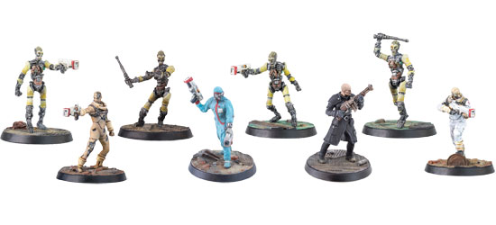

Fallout Wasteland warfare is a miniature game I've just came across, as a fan of the fallout games I'm surprised I haven't came across something like this sooner so far all of the post war factions are available in the game. Modiphius, the developers have just added my favourite faction The Enclave into the game and have said they're adding the Fallout New Vegas factions later on.

The current factions available are;
Some shop links incase you're intrested